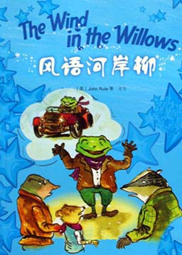

双语小说
收录中英文双语小说300多部，包括世界经典名著、社会小说、悬疑小说等短篇和长篇小说，可按照初中难度、高中难度和大学难度分类阅读，每部小说都有分段中英文对照，点击单词可查看中文翻译。
怦然心动 (Flipped)
作者：文德琳·范·德拉安南 (Wendelin Van Draanen) [美国]
美国作家文德琳·范·德拉安南创作的一部长篇小说，小说讲述的是青春期男孩女孩间的有趣故事。后被翻拍成著名同名电影。内容简介：朱莉·贝克虔诚地相信三件事：树是圣洁的，特别是她最爱的梧桐树；她在后院里饲养的鸡下的蛋是最卫生的；以及总有一天她会和布莱斯·罗斯基接吻。二年级时在看到布莱斯的蓝眼睛那一瞬间，朱莉的心就被他击中了。不幸的是，布莱斯对她从来没有感觉。而且，他认为朱莉有点怪，怎么会有人把养鸡和坐在树上看成乐趣呢？没想到，到了八年级，布莱斯开始觉得朱莉不同寻常的兴趣和对于家庭的自豪感使她显得很有魅力。而朱莉则开始觉得布莱斯漂亮的蓝眼睛也许和他本人一样，其实很空洞。毕竟，怎么会有人不把别人对树和鸡的感觉当回事呢？金银岛 (Treasure Island)
作者：罗伯特·路易斯·史蒂文森 (Robert Louis Stevenson) [英国]
英国小说家罗伯特·路易斯·史蒂文森创作的一部长篇小说，创作于1881年，讲述的是18世纪中期英国少年吉姆从垂危水手彭斯手中得到传说中的藏宝图，在当地乡绅支援下组织探险队前往金银岛。并与冈恩众人智斗海盗，最终平息了叛变并成功取得宝藏的故事。《金银岛》体现了东方主义“东方化”和“包容”东方的愿望，金银岛及岛上财宝代表着被东方主义扭曲了的东方形象。内容简介：吉姆是一个十岁大的小男孩，吉姆的父母在黑山海湾旁经营一家旅馆名为「本鲍上将」。有一天，旅馆来了一位脸上带着刀疤、身材高大结实、非常引人注目的客人，原来他就是比尔船长。吉姆非常喜欢听比尔船长讲故事，那些听起来挺吓人的经历，像是罪犯被处以绞刑、海盗双手被绑而且蒙眼走跳板、突如其来的海上大风暴、遍地骨骸的西班牙海盗巢穴等，每次都让吉姆又爱又怕，也让宁静的小镇增添了不少新鲜刺激的话题。没多久，比尔船长因为饮酒过量加上受到惊吓而死在旅馆中，吉姆无意间发现比尔身上带着的一张藏宝图，那是海盗普林特船长所遗留下的，于是吉姆和一群人的金银岛寻宝的故事就此展开。金银岛（简化版） (Treasure Island)
作者：罗伯特·路易斯·史蒂文森 (Robert Louis Stevenson) [英国]
《金银岛》是以真实的历史背景为题材写的，书中的荒岛即科科斯岛，位于太平洋距哥斯达黎加海岸483千米的海中，曾是17世纪海盗的休息站。海盗们经常将掠夺的财宝在此装卸和埋藏，因此为这个并非鸟语花香、景色宜人的小岛平添了许多神秘色彩。据说岛上至少埋有六处宝藏。
风语河岸柳（简化版） (The Wind in the Willows)
作者：肯尼斯·格雷厄姆 (Kenneth Grahame) [英国]
鼹鼠在他的朋友水鼠身边体验到了一种新的生活。在河边，在漫长的金色的夏天，风吹过柳树时，在轻轻低语着它的秘密。生活充满了兴奋的冒险，还有新的朋友：水獭和獾，当然少不了聪明的、勇敢的、了不起的癞蛤蟆先生……嗨，那只是蛤蟆自己对自己的评价，他的朋友们可不以为然。当他疯狂迷上驾车时，他变成了一只极愚蠢，极危险的癞蛤蟆。
德伯家的苔丝 (Tess of the d’urbervilles)
作者：托马斯·哈代 (Thomas Hardy) [英国]
本书是19世纪英国文学的一颗明珠，奠定了哈代在英国乃至世界文学的地位。在美丽的苔丝身上人们至始至终看到的是她纯洁的本性对逼迫她的恶势力的苦苦挣扎。内容简介：苔丝出生于一个贫苦小贩的家庭，他的父亲约翰·德比有一天被人告知是古代贵族德伯的后代，他便得意忘形起来。约翰和他的老婆决定让女儿到一个富老太婆家去攀亲戚，以期在经济上得到帮助。苔丝去了以后被老太婆的儿子亚雷诱奸，她怀孕回家，孩子一生下即夭折。过了几年，苔丝离家来到陶勃赛乳牛场干挤奶的活儿，在这里他与牧师的儿子安吉尔·克莱恋爱并订婚。苔丝对文质彬彬、颇有知识的克莱十分崇拜和热爱，几次想把自己曾被亚雷奸污的事告诉他，但都因种种缘故而没有办到。结婚前数日她曾写了一封长信将往事告知克莱，她把信从房门下边塞进克莱的屋子却塞到了地毯下面。新婚之夜她把自己昔日的这一不幸事件向丈夫坦白，但是克莱没能原谅她。这以后他们两人分居，克莱去巴西发展他的事业，苔丝仍在一些农场打工糊口。命运却让她再次与已经披上牧师黑袍的亚雷·德伯相遇。亚雷对苔丝的情欲顿时击败了他那没有根基的宗教信仰，他纠缠苔丝，不得到她决不罢休。这时候苔丝的父亲病故，为了母亲和弟弟妹妹们的生活，她被迫与亚雷同居。不久，安吉尔·克莱尔从巴西回国，找到妻子并表示悔恨以往的冷酷无情。苔丝在这种情况下认为，是亚雷· 德伯使她第二次失去了克莱，又一次毁掉了她的幸福，她懊恼和愤怒到了极点，带着一种责任感，杀死了亚雷。在与克莱一起度过幸福、满足的最后五天之后，苔丝被捕并被处以绞刑。
德伯家的苔丝（简化版） (Tess of the d’urbervilles)
作者：托马斯·哈代 (Thomas Hardy) [英国]
苔丝是一位美丽的农家少女，因受假冒的少爷亚历克诱迫而失身怀孕。她后来和安奇尔相恋结婚,结婚的那天晚上，他们互相坦白了自己的过失，苔丝原谅了安奇尔，但安奇尔觉得这是不可接受的事情，经过一番挣扎离开了她。从此，这一耻辱的事实一直烦扰着她。她重见亚历克，亚历克在传颂圣经。亚历克再次纠缠苔丝，这时苔丝一家由于父亲的突然去世，流落街头。亚历克乘虚而入，并多次强调苔丝已经被抛弃，她的丈夫不会回来。于是苔丝与他同居了，但是精神仿佛已经飘离了肉体。不料，就在这时她丈夫回来了。苔丝为了自己真正的爱。毅然杀死同居的少爷，在与丈夫逃亡中,感受到了甜蜜与满足，五天后，走上了绞刑台。
傲慢与偏见 (Pride and Prejudice)
作者：简·奥斯汀 (Jane Austen) [英国]
英国女小说家简·奥斯汀创作的长篇小说。这部作品以日常生活为素材，一反当时社会上流行的感伤小说内容和矫揉造作的写作方法，生动地反映了18世纪末到19世纪初处于保守和闭塞状态下的英国乡镇生活和世态人情。并多次被改编成电影和电视剧。内容简介：从伦敦新搬来的单身汉阔少宾利先生爱上了温柔美貌的大女儿简，他的朋友达西则倾情于二女儿伊丽莎白。由于她听信了年轻军官韦恩的谗言而对达西产生了偏见致使这桩婚姻进行的十分缓慢。经过一连串有趣的周折后，误会终于得以消除。达西克服了傲气，伊丽莎白也克服了对他的偏见，最后两人终成眷属。与此同时，作品还涉及了另外两对青年男女的结合过程，即已是27岁的夏洛特出于寻找归宿找个可以依靠的有钱人遂于柯林斯结婚，莉迪亚一贯轻浮，与韦恩私奔后，经达西搭救而苟合成婚。
傲慢与偏见（简化版） (Pride and Prejudice)
作者：简·奥斯汀 (Jane Austen) [英国]
小乡绅班纳特五个待字闺中的千金，主角是二女儿伊丽莎白。她在舞会上认识了达西，但是耳闻他为人傲慢，一直对他心生排斥，经历一番周折，伊丽莎白解除了对达西的偏见，达西也放下傲慢，有情人终成眷属。
简爱 (Jane Eyre)
作者：夏洛蒂·勃朗特 (Charlotte Bronte) [英国]
英国女作家夏洛蒂·勃朗特创作的长篇小说，是一部具有自传色彩的作品。激情、幻想、反抗和坚持不懈的精神；对人间自由幸福的渴望和对更高精神境界的追求。这本小说的主题是通过孤女坎坷不平的人生经历，成功地塑造了一个不安于现状、不甘受呼、敢于抗争的女性形象，反映一个平凡心灵的坦诚倾诉的呼号和责难，一个小写的人成为—个大写的人的渴望。内容简介：简爱自幼父母双亡，寄养于舅母家，备受虐待，后被舅母打发到孤儿院去。孤儿院环境恶劣，但她顽强地活了下来。毕业后，简应聘去当家庭教师谋生。主人罗切斯特性格忧郁、喜怒无常，但经过较长时间接触，简发现罗切斯特心地善良，为人正直、刚毅，渐渐对他产生了感情。当他们在教堂举行婚礼时，简痛苦地发现，原来罗切斯特有一个疯妻。简悲伤地离去。后来，与她离散多年的叔父病故，遗赠给她巨额财产。因不能忘情于罗切斯特，她重回故地，才知数月前疯女人纵火而死，罗切斯特为救她被烧瞎了双眼。简立刻去向他倾诉衷情，两人终缔良缘。
简爱（简化版） (Jane Eyre)
作者：夏洛蒂·勃朗特 (Charlotte Bronte) [英国]
罗切斯特先生与简爱相识于一场堕马事故，随着二人慢慢熟悉，罗切斯特先生体会到简爱的与众不同，并渐渐爱上她，简爱亦受到罗切斯特先生的强烈吸引，但是大宅夜晚总会发生一些怪事，二人的爱情似乎蒙着一层阴。